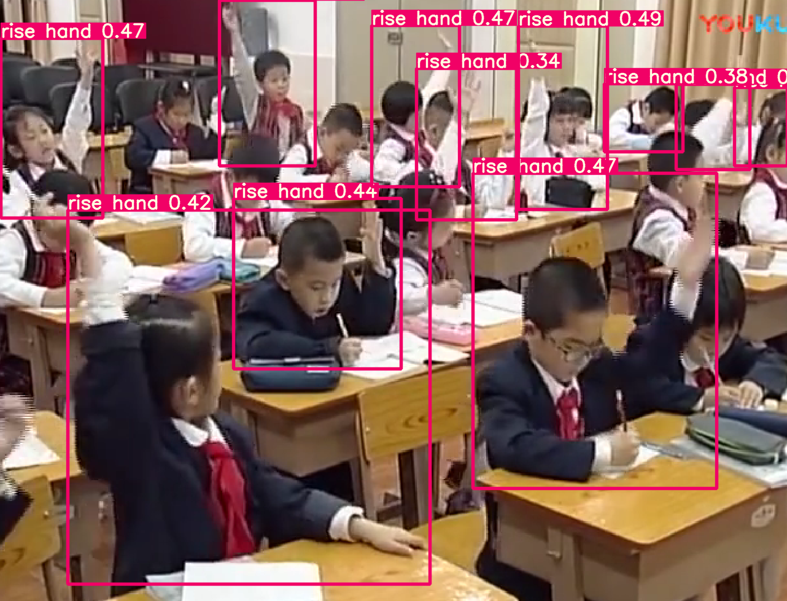
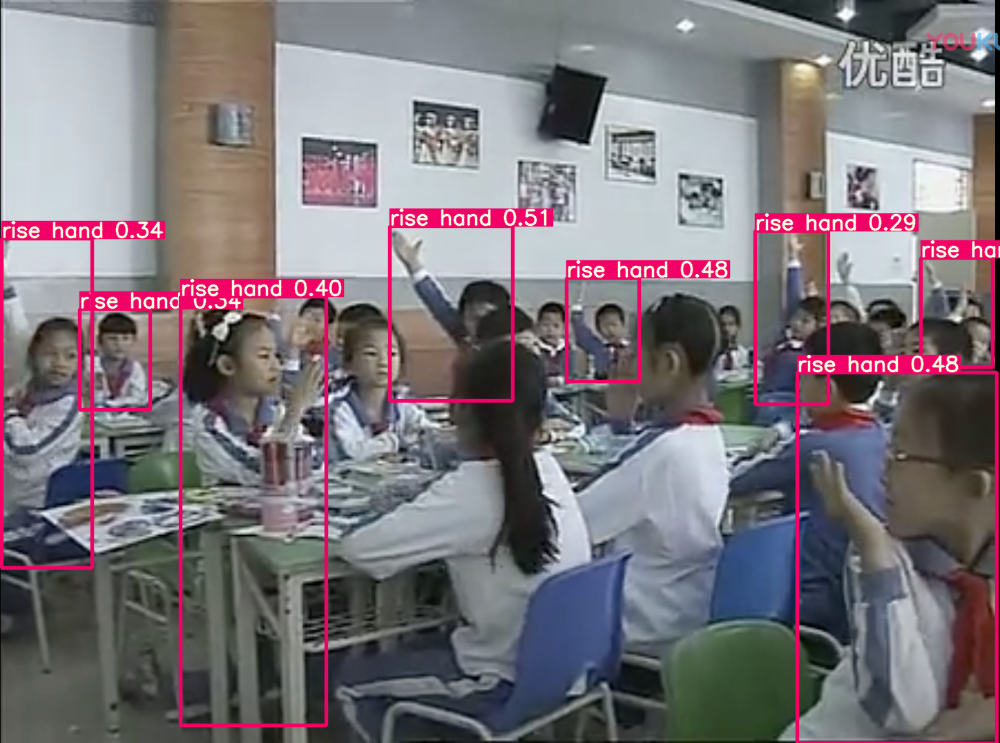
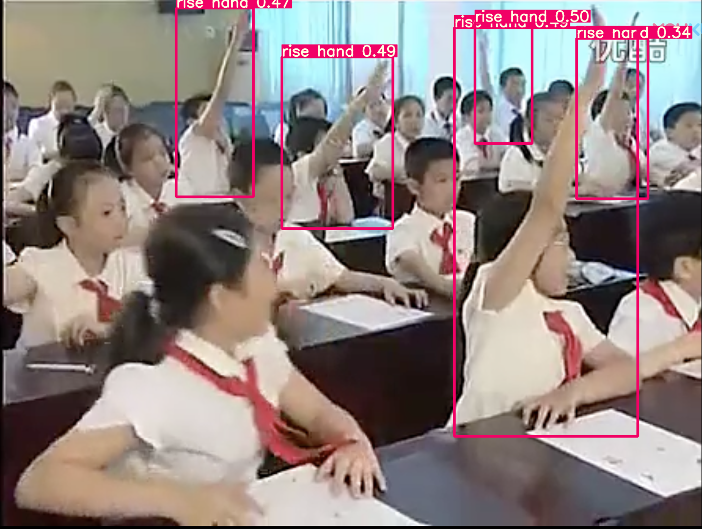

首页
我国近年梯次有序地推进智慧学校的建设，逐步构建以智慧教学、智慧管理、智慧生活等为特色的学校结构。学生课堂无疑是构建智慧学校最重要的环节之一，学生课堂的质量由多方面决定，如教学设计、课堂实践、教学评估等，其中教学评估是对教学设计与实践的反馈。我们客观角度对课堂中学生的行为进行检测分析，对评估老师、任课老师、学校领导、学生家长都有着重大的现实意义。
示例
  我们采用教室录制的视频，视频为学生课堂的行为分析提供了最基本的数据，我们采用先进的计算机视觉技术实现自动识别、检测出学生的课堂行为，辅助教学评估的完成。对于任课老师而言，可以通过对学生行为的分析，掌握学生的上课状态，根据反馈结果来调整自己的授课方式。对于学校的领导而言，可以全面客观地掌握每个班级的情况，也可以对教师的教学水平进行客观评价，有助于学校的教学质量提升；对于家长而言，可以掌握学生在校情况，通过反馈的问题，帮助家长更好地辅助学生完成课前预习与课后辅导。从长期来看，通过对学生长期的课堂行为分析，掌握学生这段时间以来的学习状态的变化，学校可以为每一个学生制定个性化培养方案。
发展方向
我们以大量数据为基础，制作出了智慧课堂系统，以此来帮助课堂学习
效率以及帮助老师管理，如果您有相关内容需要资讯，欢迎联系我们!
参考网站